PROJET DÉCOUVERTE · BTS SIO SISR
Lab Kubernetes K3s
Cluster complet
GitOps · DevSecOps · Monitoring · Stockage distribué
Présentation du projet
Contexte
Dans le cadre du BTS SIO option SISR, ce projet consiste à déployer une infrastructure Kubernetes complète en environnement virtualisé sur VMware Workstation. Il reproduit une architecture de production moderne basée sur K3s, la distribution Kubernetes légère certifiée CNCF, avec 4 machines virtuelles Debian 12 interconnectées sur un réseau dédié VMnet11.
Problématique
Comment déployer et opérer un cluster Kubernetes multi-nœuds en intégrant les pratiques DevOps (GitOps), DevSecOps (scan CVE, politiques d'admission) et Monitoring (métriques, alertes) sur une infrastructure bare-metal virtualisée ?
Stack technique déployée
| Composant | URL / Accès | Rôle |
|---|---|---|
| K3s v1.35.5 | kubectl get nodes | Orchestrateur Kubernetes – 1 master + 2 workers + 1 storage |
| Longhorn | https://longhorn.k3s.local | Stockage persistant distribué – StorageClass par défaut |
| Prometheus | https://prometheus.k3s.local | Collecte et stockage des métriques du cluster |
| Grafana | https://grafana.k3s.local | Dashboards de visualisation des métriques en temps réel |
| Alertmanager | https://alertmanager.k3s.local | Gestion et routage des alertes |
| Gitea | https://gitea.k3s.local | Forge Git auto-hébergée – dépôt k3s-apps |
| ArgoCD | https://argocd.k3s.local | Déploiement continu GitOps – synchronisation automatique |
| Harbor | https://harbor.k3s.local | Registry Docker privé + scan CVE Trivy |
| WordPress | https://wordpress.k3s.local | Application CMS de démonstration + MariaDB |
| Cert-Manager | – | Certificats TLS auto-signés pour tous les Ingress |
| Kyverno | – | Politiques de sécurité – Admission Controller K8s |
| MetalLB | 192.168.110.100-120 | Load Balancer bare-metal – IPs externes réelles |
| Traefik | – | Ingress Controller intégré K3s |
| Helm v3.21 | – | Gestionnaire de paquets Kubernetes |
Objectifs techniques
- Déployer un cluster K3s multi-nœuds (1 master + 2 workers + 1 storage) sur réseau VMnet11
- Mettre en place du stockage persistant distribué avec réplication multi-nœuds (Longhorn)
- Déployer un monitoring complet : collecte métriques (Prometheus), dashboards (Grafana), alertes (Alertmanager)
- Implémenter un pipeline GitOps de bout en bout : dépôt Git (Gitea) → déploiement automatique (ArgoCD)
- Mettre en place une registry Docker privée avec scan CVE automatique (Harbor + Trivy)
- Sécuriser le cluster avec des politiques d'admission K8s (Kyverno) en mode Enforce
- Gérer les certificats TLS de tous les services automatiquement (Cert-Manager)
- Exposer des services avec de vraies IPs externes sur un cluster bare-metal (MetalLB)
Schéma de l'infrastructure
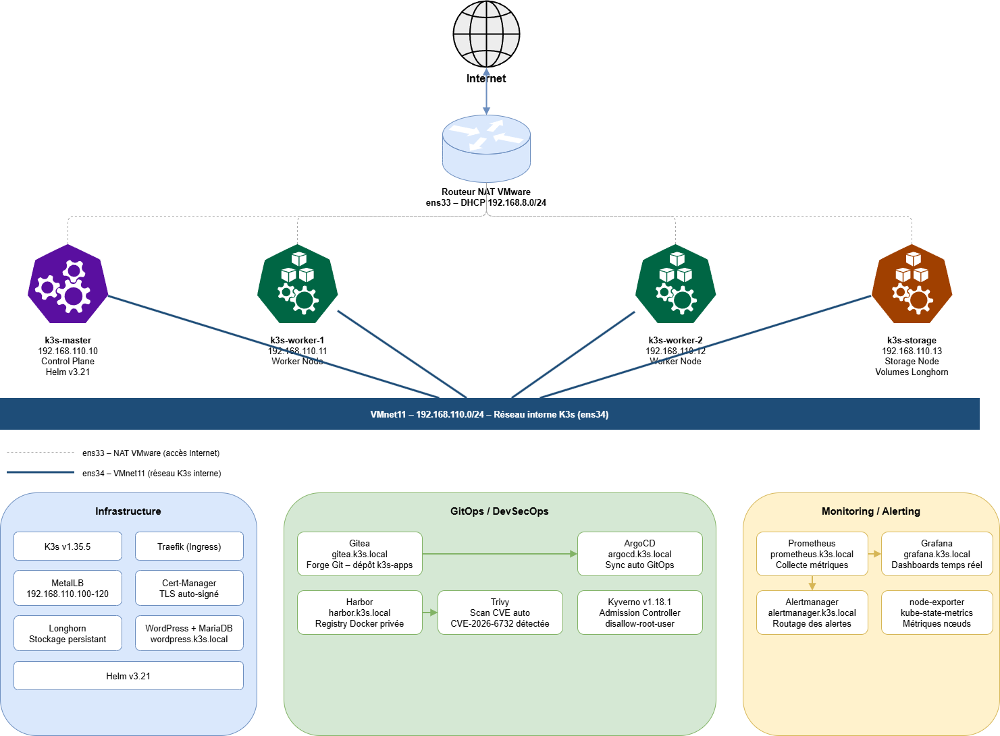
Internet → Routeur NAT VMware → 4 VMs Debian 12 sur VMnet11 → Composants K3s
Réalisation technique
Étape 1 – Préparation de l'infrastructure réseau
| VM | Rôle | CPU | RAM | IP VMnet11 |
|---|---|---|---|---|
| k3s-master | Control Plane + Helm | 2 vCPU | 7 Go | 192.168.110.10 |
| k3s-worker-1 | Worker Node | 2 vCPU | 7 Go | 192.168.110.11 |
| k3s-worker-2 | Worker Node | 2 vCPU | 7 Go | 192.168.110.12 |
| k3s-storage | Storage Node (Longhorn) | 2 vCPU | 7 Go | 192.168.110.13 |
# Vérification de la configuration réseau sur chaque VM ip a # Test de connectivité inter-nœuds (obligatoire avant K3s) ping -c 3 192.168.110.11 # master → worker-1 ping -c 3 192.168.110.12 # master → worker-2 ping -c 3 192.168.110.13 # master → storage
Étape 2 – Déploiement du cluster K3s
# Sur le master : installation du control plane curl -sfL https://get.k3s.io | sh - # Récupération du token partagé pour les workers sudo cat /var/lib/rancher/k3s/server/node-token # Sur chaque worker et k3s-storage curl -sfL https://get.k3s.io | K3S_URL=https://192.168.110.10:6443 K3S_TOKEN=<token> sh - # Vérification depuis le master sudo kubectl get nodes
Étape 3 – Stockage persistant (Longhorn)
helm repo add longhorn https://charts.longhorn.io && helm repo update helm install longhorn longhorn/longhorn --namespace longhorn-system --create-namespace kubectl get pods -n longhorn-system kubectl get storageclass
Étape 4 – Monitoring (Prometheus + Grafana + Alertmanager)
helm repo add prometheus-community https://prometheus-community.github.io/helm-charts kubectl create namespace monitoring helm install kube-prometheus-stack prometheus-community/kube-prometheus-stack --namespace monitoring kubectl get svc -n monitoring kubectl apply -f grafana-ingress.yaml kubectl apply -f all-ingress-https.yaml
Étape 5 – Certificats TLS (Cert-Manager)
sudo kubectl apply -f https://github.com/cert-manager/cert-manager/releases/download/v1.14.0/cert-manager.yaml kubectl apply -f cluster-issuer.yaml kubectl get pods -n cert-manager
Étape 6 – Pipeline GitOps (Gitea + ArgoCD)
helm install gitea gitea-charts/gitea --namespace gitea --create-namespace kubectl create namespace argocd kubectl apply -n argocd -f https://raw.githubusercontent.com/argoproj/argo-cd/stable/manifests/install.yaml kubectl apply -f argocd-app.yaml kubectl get applications -n argocd
Étape 7 – Registry privée et scan CVE (Harbor + Trivy)
helm install harbor harbor/harbor --namespace harbor --create-namespace \ --set expose.type=ingress --set expose.ingress.hosts.core=harbor.k3s.local \ --set externalURL=https://harbor.k3s.local \ --set persistence.persistentVolumeClaim.registry.storageClass=longhorn # Build et push myapp:v1 (avec vulnérabilité CVE-2026-6732) docker build -t harbor.k3s.local/k3s-lab/myapp:v1 . docker push harbor.k3s.local/k3s-lab/myapp:v1 # Correction : RUN apk upgrade --no-cache dans le Dockerfile docker build -t harbor.k3s.local/k3s-lab/myapp:v2 . docker push harbor.k3s.local/k3s-lab/myapp:v2
Étape 8 – Politiques de sécurité (Kyverno)
helm install kyverno kyverno/kyverno --namespace kyverno --create-namespace kubectl apply -f kyverno-policy.yaml # Test : tentative de créer un pod en root sudo kubectl run test-root --image=nginx --namespace=default # → Error from server: admission webhook denied the request
Étape 9 – Load Balancer bare-metal (MetalLB)
sudo kubectl apply -f https://raw.githubusercontent.com/metallb/metallb/v0.14.5/config/manifests/metallb-native.yaml kubectl apply -f metallb-pool.yaml # IPAddressPool 192.168.110.100-120 kubectl apply -f metallb-l2.yaml # L2Advertisement kubectl get svc nginx-lb # Vérification IP externe assignée
Tests et Validation
| Test effectué | Résultat attendu | Validation |
|---|---|---|
| kubectl get nodes | 4 nœuds Ready – v1.35.5+k3s1 | ✅ Cluster K3s opérationnel |
| Ping inter-nœuds (VMnet11) | 0 % packet loss, ~0,5 ms | ✅ Réseau interne fonctionnel |
| Dashboard Longhorn | 2 volumes Healthy, 4 nœuds | ✅ Stockage persistant actif |
| https://grafana.k3s.local | Dashboards K8s temps réel | ✅ Monitoring opérationnel |
| Commit Gitea → ArgoCD | Sync automatique < 3 min | ✅ Pipeline GitOps fonctionnel |
| Harbor scan myapp:v1 | CVE-2026-6732 Haute détectée | ✅ Scan Trivy opérationnel |
| Harbor scan myapp:v2 | Aucune vulnérabilité | ✅ Correction CVE validée |
| kubectl run test-root | Pod bloqué par Kyverno | ✅ Politique sécurité active |
| Service LoadBalancer nginx | IP 192.168.110.101 assignée | ✅ MetalLB fonctionnel |
| https://wordpress.k3s.local | WordPress + MariaDB accessible | ✅ App + PVC Longhorn OK |
| Certificats TLS (tous services) | Cert valide généré automatiquement | ✅ Cert-Manager opérationnel |
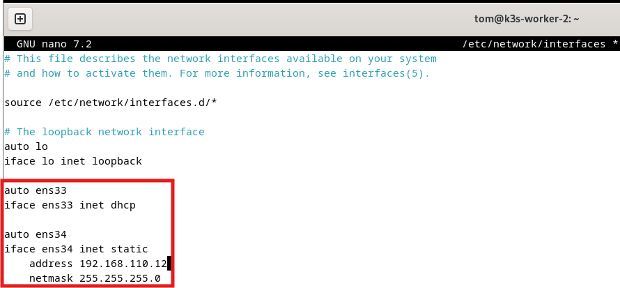
Fig. 1 – /etc/network/interfaces sur k3s-worker-2 – ens33 DHCP + ens34 statique 192.168.110.12
On voit les deux blocs de configuration : ens33 en DHCP pour le NAT VMware (accès Internet), et ens34 avec une adresse statique 192.168.110.12 sur VMnet11. Cette configuration est identique sur chaque VM, seule l'adresse ens34 change.
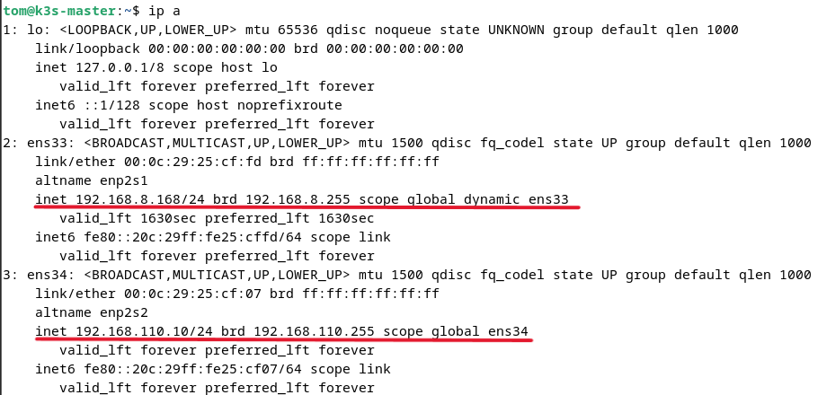
Fig. 2 – ip a sur k3s-master – ens33 (192.168.8.168) + ens34 (192.168.110.10) – les deux interfaces UP
Les deux interfaces sont en état UP avec leurs IPs respectives. L'interface ens34 porte l'IP 192.168.110.10/24 utilisée par K3s pour toutes les communications inter-nœuds du cluster.
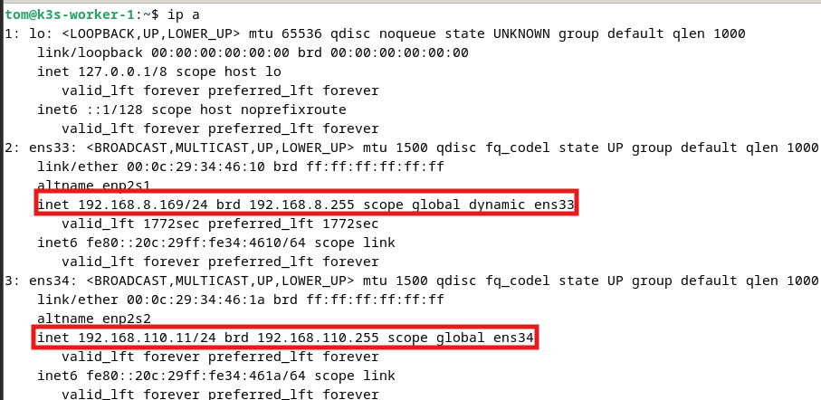
Fig. 3 – ip a sur k3s-worker-1 – ens33 (192.168.8.169) + ens34 (192.168.110.11)
Configuration identique au master : ens34 porte l'IP 192.168.110.11/24. Le worker peut communiquer avec le master sur 192.168.110.10:6443 pour recevoir ses instructions de l'API Server K3s.
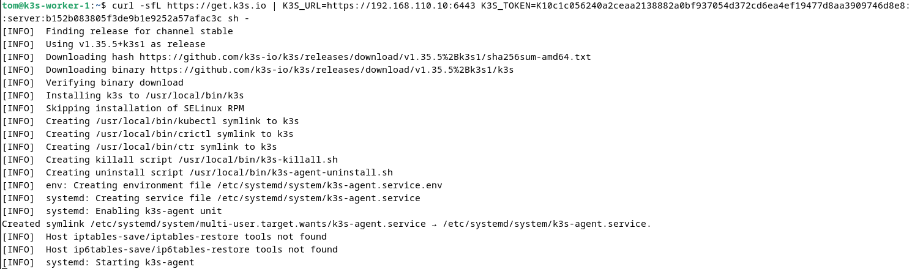
Fig. 4 – Installation K3s sur k3s-worker-1 – v1.35.5+k3s1 téléchargé, k3s-agent activé via systemd
Le script télécharge le binaire v1.35.5+k3s1, crée le service systemd k3s-agent et le démarre. La ligne "systemd: Starting k3s-agent" confirme que le worker contacte le control plane sur 192.168.110.10:6443.
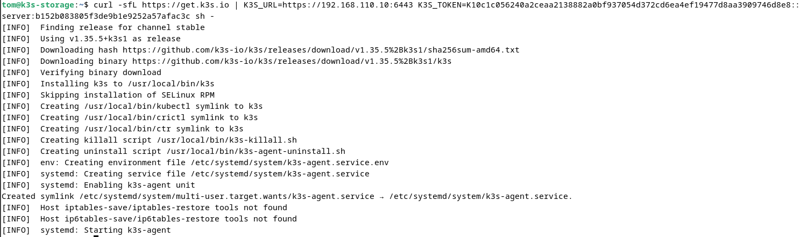
Fig. 5 – Installation K3s sur k3s-storage – le nœud rejoint le cluster comme agent de stockage
Même procédure sur k3s-storage. Ce nœud n'exécutera pas de workloads applicatifs : il est dédié à Longhorn qui y stockera les réplicas des volumes persistants.
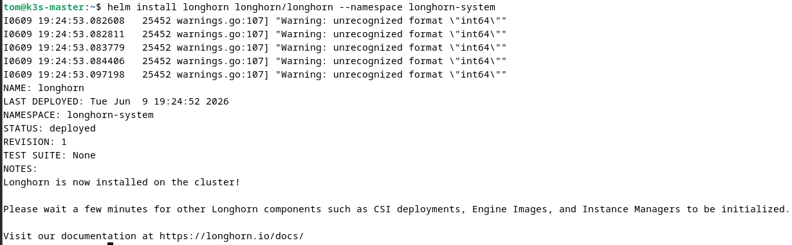
Fig. 6 – helm install longhorn – STATUS: deployed – Longhorn is now installed on the cluster
Le statut "STATUS: deployed" confirme que Helm a déployé avec succès l'ensemble des ressources Longhorn. Les warnings "unrecognized format int64" sont inoffensifs.
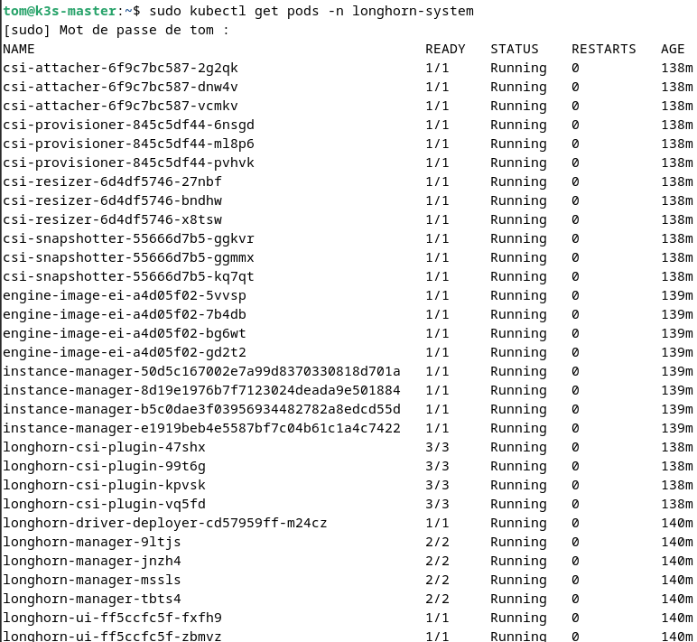
Fig. 7 – kubectl get pods -n longhorn-system – tous les pods Running (CSI, instance-managers, manager)
On voit les 4 instance-managers (un par nœud), les 4 longhorn-manager, les drivers CSI. Tous sont en état Running avec 0 restart, ce qui confirme un déploiement stable.
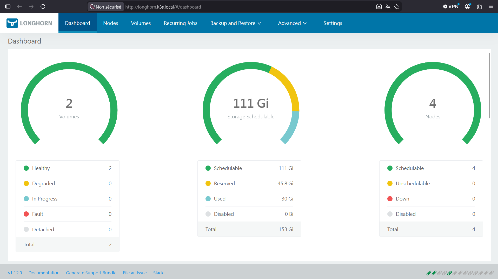
Fig. 8 – Dashboard Longhorn – 2 volumes Healthy, 111 Gi disponibles, 4 nœuds actifs
Le dashboard confirme l'état global : 2 volumes Healthy, 111 Gi schedulables sur les 4 nœuds, 30 Gi utilisés. Aucun volume Degraded ni Fault.
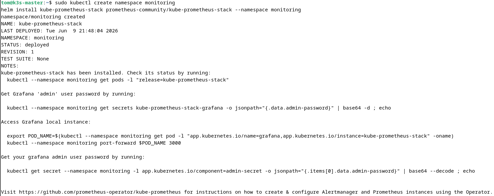
Fig. 9 – helm install kube-prometheus-stack – STATUS: deployed, namespace monitoring créé
Le chart installe en une commande Prometheus, Grafana, Alertmanager, node-exporter et kube-state-metrics.
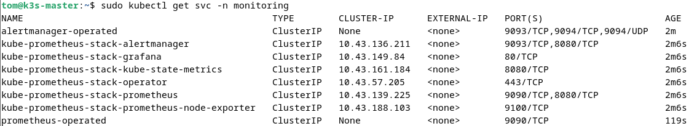
Fig. 10 – kubectl get svc -n monitoring – ClusterIPs Grafana (80/TCP), Prometheus (9090/TCP), Alertmanager (9093/TCP)
Les services sont en ClusterIP, accessibles uniquement depuis l'intérieur du cluster. C'est pour cette raison qu'on crée des Ingress avec Traefik pour les exposer en HTTPS vers l'extérieur.
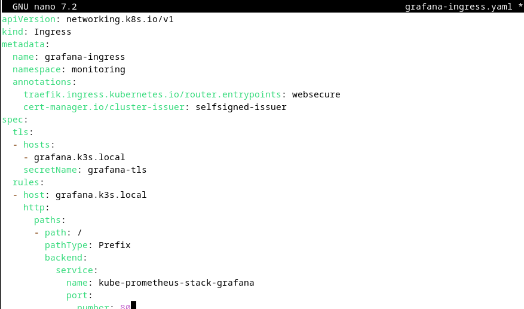
Fig. 11 – grafana-ingress.yaml – annotations Traefik websecure + Cert-Manager selfsigned-issuer
L'annotation traefik.ingress.kubernetes.io/router.entrypoints: websecure indique à Traefik d'exposer le service sur HTTPS (port 443). L'annotation cert-manager.io/cluster-issuer: selfsigned-issuer déclenche la génération automatique du certificat TLS.
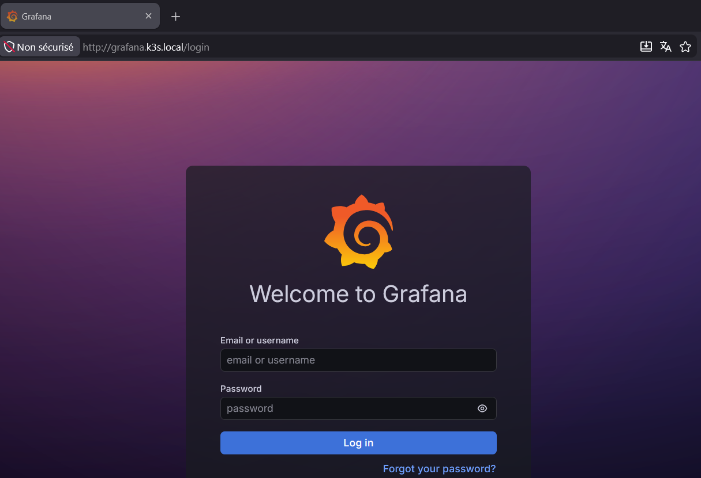
Fig. 12 – Page de login Grafana – accessible via https://grafana.k3s.local – certificat TLS actif
Grafana est accessible depuis Windows via grafana.k3s.local (entrée ajoutée dans le fichier hosts). L'alerte "Non sécurisé" est attendue pour un certificat auto-signé – en production on utiliserait Let's Encrypt.
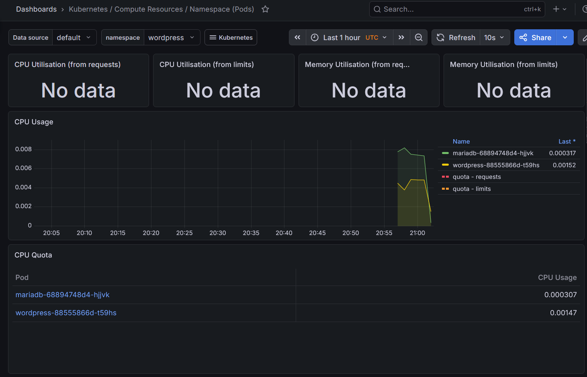
Fig. 13 – Dashboard Grafana – namespace wordpress – métriques CPU pods WordPress et MariaDB en temps réel
Le dashboard Kubernetes / Compute Resources / Namespace montre la consommation CPU des pods wordpress et mariadb. Les courbes confirment que Prometheus collecte bien leurs métriques via node-exporter.
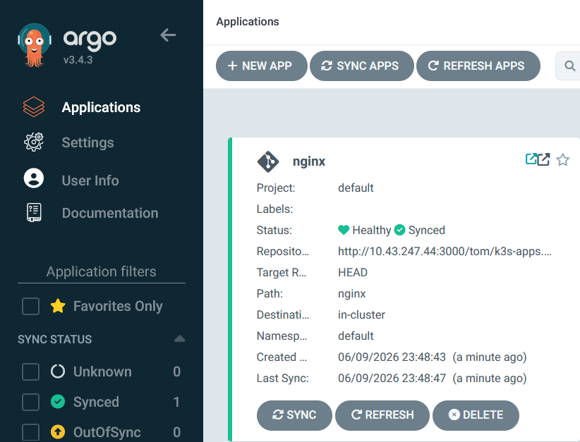
Fig. 14 – ArgoCD – application nginx • Healthy • Synced – synchronisation automatique active
"Healthy" signifie que tous les pods sont Running. "Synced" signifie que l'état du cluster correspond exactement aux manifests dans Gitea. "Last Sync" montre que la synchronisation automatique fonctionne.
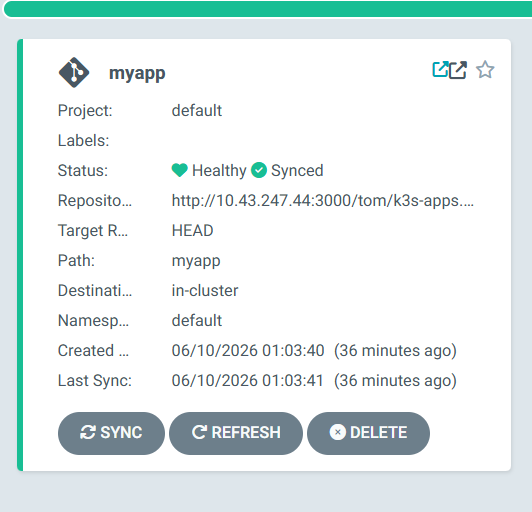
Fig. 15 – ArgoCD détail myapp – Healthy + Synced to HEAD – dépôt k3s-apps sur Gitea
La carte montre le lien ArgoCD ↔ Gitea : dépôt source http://10.43.247.44:3000/tom/k3s-apps, chemin /myapp, référence HEAD. À chaque commit, ArgoCD synchronise automatiquement le cluster.
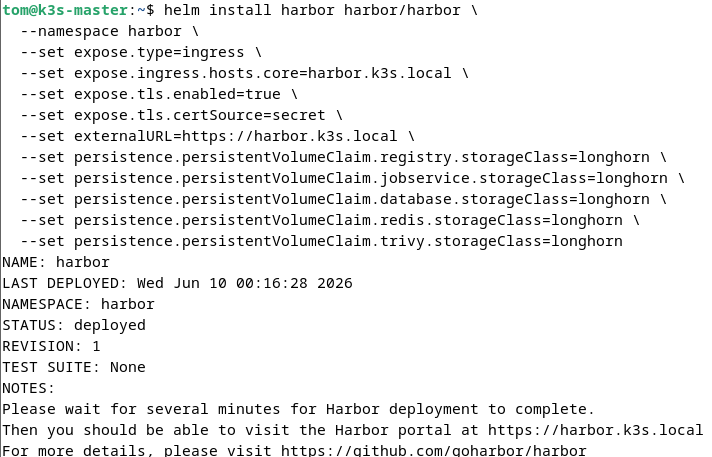
Fig. 16 – helm install harbor – STATUS: deployed – PVCs Longhorn créés pour la registry
Harbor est installé avec Longhorn comme StorageClass pour tous ses PVCs (registry, jobservice, database, redis, trivy). Cela garantit la persistance des images et des résultats de scan.
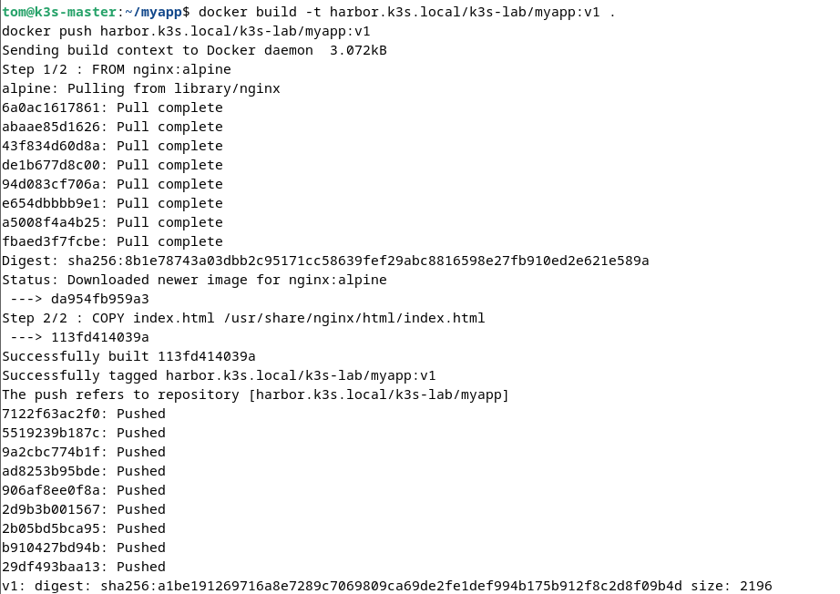
Fig. 17 – docker build + push harbor.k3s.local/k3s-lab/myapp:v1 – tous les layers poussés, digest SHA256 confirmé
L'image est construite depuis une base nginx:alpine. Dès la fin du push, Trivy lance automatiquement un scan CVE – la CVE-2026-6732 (Haute) sera détectée dans les paquets Alpine non mis à jour.
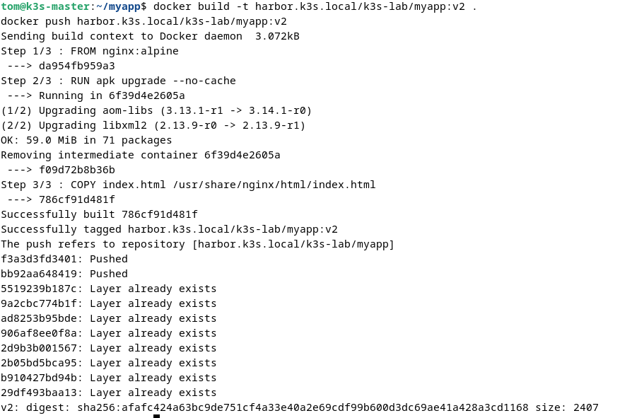
Fig. 18 – docker build myapp:v2 – RUN apk upgrade --no-cache corrige CVE-2026-6732 – push réussi
L'ajout de RUN apk upgrade --no-cache met à jour tous les paquets Alpine. On voit la mise à jour des librairies vulnérables (aom-libs, libxml2). Le re-scan Trivy sur v2 ne détecte aucune vulnérabilité : le cycle DevSecOps est complet.
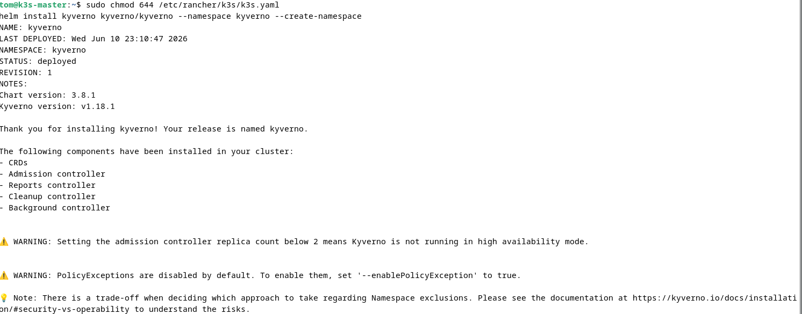
Fig. 19 – helm install kyverno v1.18.1 – Admission Controller, CRDs et Reports controller actifs
Kyverno installe 5 composants : CRDs, Admission Controller (intercepte les requêtes), Reports Controller, Cleanup Controller et Background Controller. Le WARNING sur le replica count est attendu en lab mono-réplica.
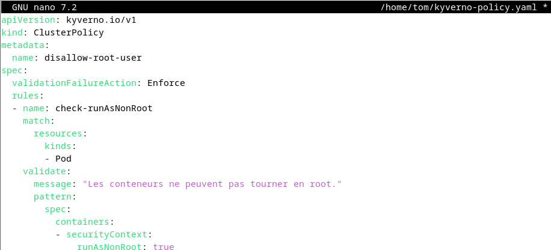
Fig. 20 – kyverno-policy.yaml – ClusterPolicy disallow-root-user – validationFailureAction: Enforce
La politique cible tous les pods et vérifie que securityContext.runAsNonRoot est à true. En mode Enforce, toute tentative de créer un pod sans cette contrainte est rejetée immédiatement.
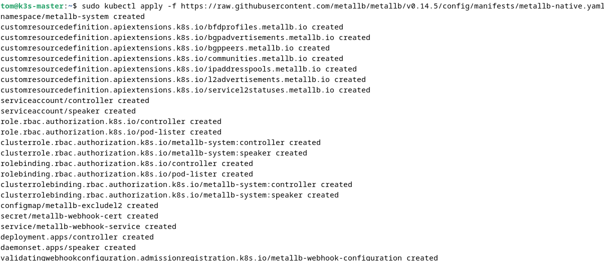
Fig. 21 – kubectl apply metallb-native.yaml – CRDs IPAddressPool + L2Advertisement créés
MetalLB crée ses CRDs (IPAddressPool, L2Advertisement, BGPPeer) et déploie le controller (assigne les IPs) et le speaker (répond aux requêtes ARP en mode Layer 2).
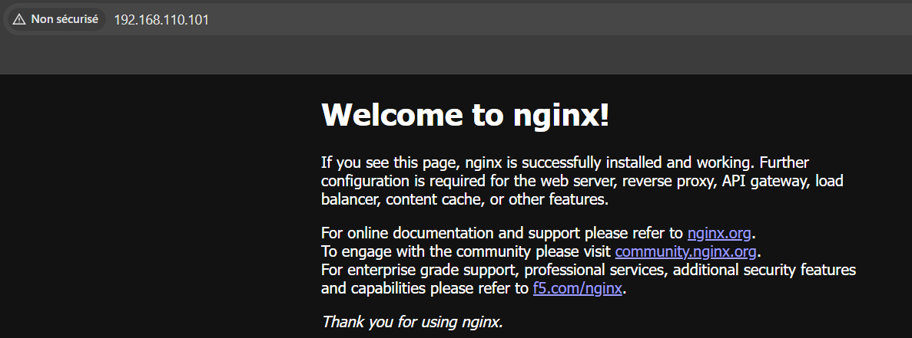
Fig. 22 – http://192.168.110.101 – Welcome to nginx! – service accessible via IP externe MetalLB
La page nginx est accessible directement depuis Windows via 192.168.110.101, sans NAT ni port-forwarding. MetalLB a assigné cette IP du pool 192.168.110.100-120 et le speaker l'annonce via ARP sur VMnet11.
Bilan et Compétences
Difficultés rencontrées
| Difficulté | Solution |
|---|---|
| Helm kubeconfig | export KUBECONFIG=/etc/rancher/k3s/k3s.yaml + chmod 644 |
| Workers ne pullaient pas Harbor | registries.yaml sur chaque worker + projet Harbor en public |
| Longhorn FailedAttachVolume | Suppression complète et recréation propre des ressources |
| RAM saturée Grafana + Prometheus | Limits : Grafana 256 Mi, Prometheus 300 Mi |
| ArgoCD Ingress HTTPS | Patch --insecure + Traefik HTTPS frontal |
| IPs DHCP multiples ens33 | sudo reboot pour nettoyer les baux DHCP |
Compétences BTS SIO SISR validées
| Bloc | Compétence | Mise en œuvre |
|---|---|---|
| B1.1 | Gérer le patrimoine | Installation 4 VMs Debian 12, services systemd, réseau statique dual-interface |
| B1.2 | Répondre aux incidents | Diagnostic et résolution : Longhorn FailedAttachVolume, Helm kubeconfig, ArgoCD HTTPS |
| B1.3 | Présence en ligne | WordPress + MariaDB, PVC Longhorn, Ingress HTTPS Cert-Manager |
| B1.4 | Mode projet | Gestion des dépendances, déploiement ordonné des 14 composants |
| B1.5 | Services | K3s, Longhorn, Grafana, ArgoCD, Harbor, WordPress – tous en HTTPS |
| Cyber | Sécurité (CIA) | Confidentialité : Kyverno + Harbor. Intégrité : Trivy CVE. Disponibilité : Longhorn |
Compétences acquises
- Maîtrise de l'administration d'un cluster Kubernetes multi-nœuds (K3s)
- Déploiement d'applications complexes via Helm (14 composants)
- Mise en pratique du GitOps : Gitea + ArgoCD (synchronisation automatique)
- Application des pratiques DevSecOps : scan CVE Trivy, politiques admission Kyverno
- Gestion du réseau virtualisé : dual-interface, MetalLB, Ingress Traefik
- Diagnostic et résolution de problèmes en environnement K8s (6 incidents résolus)